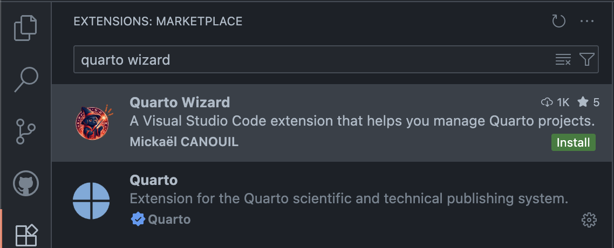
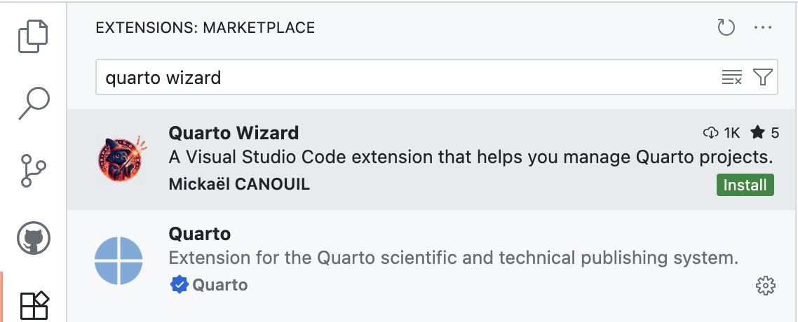

![]()
Thank you to the Quarto team for featuring this article on quarto.org, where it was originally published.

I’m absolutely thrilled to announce Quarto Wizard 1.0.0, a groundbreaking extension for Visual Studio Code and Positron that transforms how you interact with the
Quarto Wizard 1.0.0 is now available!
Install it today from the VS Code marketplace or Open VSX Registry:
Via VS Code or Positron Extensions view:
- Search for “Quarto Wizard”.
- Click “Install”.
 
Via the command line:
Terminal
code --install-extension mcanouil.quarto-wizardTipBe sure to execute the command Shell Command: Install ‘code’ command in PATH from Visual Studio Code’s Command Palette () if you haven’t done so already.
Terminal
positron --install-extension mcanouil.quarto-wizardTipBe sure to execute the command Shell Command: Install ‘positron’ command in PATH from Positron’s Command Palette () if you haven’t done so already.
Quarto has revolutionised scientific and technical publishing by enabling reproducible documents that seamlessly blend code, narrative text, and visualisation. However, one persistent friction point has been managing the rich and ever-growing ecosystem of extensions and templates—until now.
Quarto Wizard: Your GUI for Quarto extensions
I designed Quarto Wizard to address a fundamental challenge I’ve observed in the community: whilst Quarto’s command-line interface is powerful, many users prefer visual interfaces for discovering, installing, and managing extensions.
Quarto Wizard makes it simple to discover, install, and manage Quarto extensions and templates directly in your IDE.
Seamless IDE integration
Quarto Wizard integrates beautifully with both the VS Code and Positron ecosystems, appearing as a dedicated icon in the Activity Bar alongside your other development tools. This provides instant access to extension management without disrupting your coding flow, whether you’re in Microsoft’s VS Code or Posit’s new Positron IDE.
{kind=link}
{kind=link}
The solution is multi-modal installation: you can now install extensions through multiple pathways that suit your workflow: from the command line, through the web directory, or via the Quarto Wizard GUI in your IDE.
{kind=link}
{kind=link}
Intelligent extension management
The “Recently Installed Extensions” feature helps track your workflow and easily reproduce project setups across different environments. This is invaluable for researchers collaborating across multiple machines or teaching workshops where consistent setups are essential, regardless of whether team members use VS Code or Positron.
What makes this particularly powerful is that Quarto Wizard tracks which extensions were installed through its interface by adding source metadata to the _extensions.yml file, enabling seamless updates and removals.1 This source tracking transforms extension maintenance from manual archaeology into an effortless workflow. The extension maintains detailed metadata about installed extensions, enabling batch operations and dependency tracking. The Explorer View provides a comprehensive overview of all installed extensions with visual indicators for updates and management options.
{kind=link}
{kind=link}
Template workflow simplified
Beyond extension management, I’ve designed Quarto Wizard to ease the process of discovering and using document templates. Once you’ve selected a template, Quarto Wizard lets you customise and save the document. The file is not created until you confirm, allowing you to adjust the filename and location.
{kind=link}
{kind=link}
Powered by a comprehensive extension directory
Quarto Wizard transforms tedious extension hunting into one-click shopping for 250+ powerful document enhancements.
A curated catalogue of 250+ extensions
At the heart of Quarto Wizard lies the Quarto Extensions directory (m.canouil.dev/quarto-extensions/), a comprehensive listing I maintain that catalogues extensions from across the entire Quarto ecosystem.
{kind=link}
{kind=link}
To date, it includes over 250 extensions contributed by the community, covering a vast array of functionalities from citation management to interactive visualisations. This directory powers Quarto Wizard’s discovery features, providing rich metadata about each extension including descriptions, licensing, version tags, and GitHub stars. The directory is continuously updated through GitHub’s API, ensuring you always have access to the latest extensions from the community.
One-click installation from the web
What’s particularly exciting is that you can install extensions or use templates directly from the website itself. Each extension listed at m.canouil.dev/quarto-extensions/ includes multiple installation options: traditional command-line via terminal, or one-click installation through Quarto Wizard in VS Code, Positron, or VSCodium. Simply browse the directory, find the extension you need, and choose your preferred installation method. The website generates the appropriate commands or launches your IDE directly. This flexibility means teams with mixed technical backgrounds can all access the same powerful extensions.
{kind=link}
{kind=link}
For example, you might want to add the Iconify extension to access over 200,000 open source vector icons in your documents, or the Animate extension to bring your presentations to life with CSS animations. Perhaps the Spotlight extension for Reveal.js catches your eye for creating dramatic Reveal.js presentations that highlight your mouse position. All of these extensions (and hundreds more) are just a click away.
Template discovery made easy
Additionally, the Quarto Extensions directory excels at template discovery and deployment which is enhanced with powerful filtering options: you can sort by recently updated, filter by popularity, browse by categories (i.e., Shortcodes, Filters, Formats, Projects, Reveal.js Plugins), or search for specific functionality. Each extension clearly indicates whether it’s a template with “Use” buttons alongside “Install” options.
{kind=link}
{kind=link}
Whether you’re crafting an academic paper using journal-specific formats, creating professional invoices with my Invoice extension template, or building stunning presentations with themed templates like my Reveal.js Coeos extension, browsing available templates becomes as simple as scrolling through a curated gallery.
This directory creates a seamless experience: instead of manually searching GitHub repositories or memorising command-line syntax, you can browse hundreds of extensions with detailed information at your fingertips. This transforms extension discovery from a treasure hunt into a curated shopping experience.
Addressing real workflow friction
I designed Quarto Wizard and the extension directory at m.canouil.dev/quarto-extensions to directly tackle several persistent Quarto pain points I’ve encountered:
Discovery challenges: Finding relevant extensions in the growing ecosystem becomes intuitive through the visual browser interface powered by the comprehensive extensions directory.
Command-line intimidation: Users who prefer graphical interfaces no longer need to memorise terminal commands.
Document setup complexity: Template-based document initialisation eliminates manual YAML configuration.
Extension maintenance: Updates, removals, and dependency management become point-and-click operations rather than command-line archaeology.
Source tracking: Quarto Wizard automatically adds source metadata to installed extensions, enabling future updates and proper version management.
Stable installations: Quarto Wizard installs extensions from GitHub releases/tags by default instead of the potentially unstable default branch, ensuring more reliable installations and more replicable environments.
Perfect for diverse use cases
The extension shines across multiple scenarios:
Academic researchers can quickly install citation management tools, bibliography extensions like Multibib or Section Bibliographies, and journal-specific formatting, whether they’re using VS Code or Positron for their analysis work.
Data scientists gain easy access to computational extensions like WebR, visualisation tools, and interactive notebook capabilities. This is particularly powerful in Positron, which is designed specifically for data science workflows.
Technical writers can browse and install extensions for enhanced typography with for example the Highlight Text extension for multi-format text highlighting, code highlighting, and advanced formatting options of their Reveal.js presentations with Reveal.js Editable extension in their preferred IDE.
Workshop instructors can ensure all participants have consistent extension setups through guided installation processes, regardless of whether attendees prefer VS Code or Positron.
Future-ready architecture
I’ve built Quarto Wizard on robust foundations that ensure long-term reliability. The extension integrates with GitHub’s API through the Quarto Extensions directory for real-time metadata, includes attestation verification for security, and maintains full compatibility with both VS Code and Positron environments.
The modular architecture allows for future enhancements whilst maintaining backwards compatibility. As the Quarto ecosystem continues expanding and as Positron evolves alongside VS Code, Quarto Wizard will support new extension types and project management workflows in both environments.
Getting started today
Begin your Quarto Wizard journey by installing the extension from the VS Code marketplace, the Open VSX Registry, or directly through your IDE’s Extensions view. Once installed, the Quarto Wizard icon appears in your Activity Bar, providing immediate access to extension management and project tools.
You have multiple paths to explore Quarto extensions:
- Through Quarto Wizard: Click the Quarto Wizard icon in your IDE’s Activity Bar and browse the integrated catalogue.
- Via the web directory: Visit m.canouil.dev/quarto-extensions where you can browse all extensions and install them directly from the website. Each extension offers installation buttons for Quarto Wizard, VS Code, Positron, VSCodium, or traditional terminal commands.
- Traditional command-line: Use the familiar
quarto addcommands if you prefer.
Ready to transform your Quarto workflow?
Install Quarto Wizard today and discover how effortless extension management can be. Your future self will thank you for making document creation this intuitive and powerful.
Try installing your first extension: perhaps Iconify extension for comprehensive icon support or GitHub for seamless GitHub linking. Whether you click “Install” on the website, use Quarto Wizard’s interface, or type commands in the terminal, the choice is yours. The difference in experience compared to traditional command-line installation is immediately apparent, especially when browsing the visual catalogue with its filtering options, popularity indicators, and rich metadata.
I believe Quarto Wizard represents a significant step forward in making Quarto’s powerful publishing capabilities accessible to users regardless of their comfort level with command-line tools or their choice of IDE. By providing intuitive visual interfaces for complex operations, Quarto Wizard democratises access to the rich Quarto ecosystem whilst maintaining the flexibility and power that makes Quarto exceptional.
The future of reproducible publishing is here, and it’s more accessible than ever in whichever modern development environment you prefer.
Footnotes
Quarto CLI does not natively track installation sources as of version 1.8.24 (quarto-dev/quarto-cli#11468).↩︎